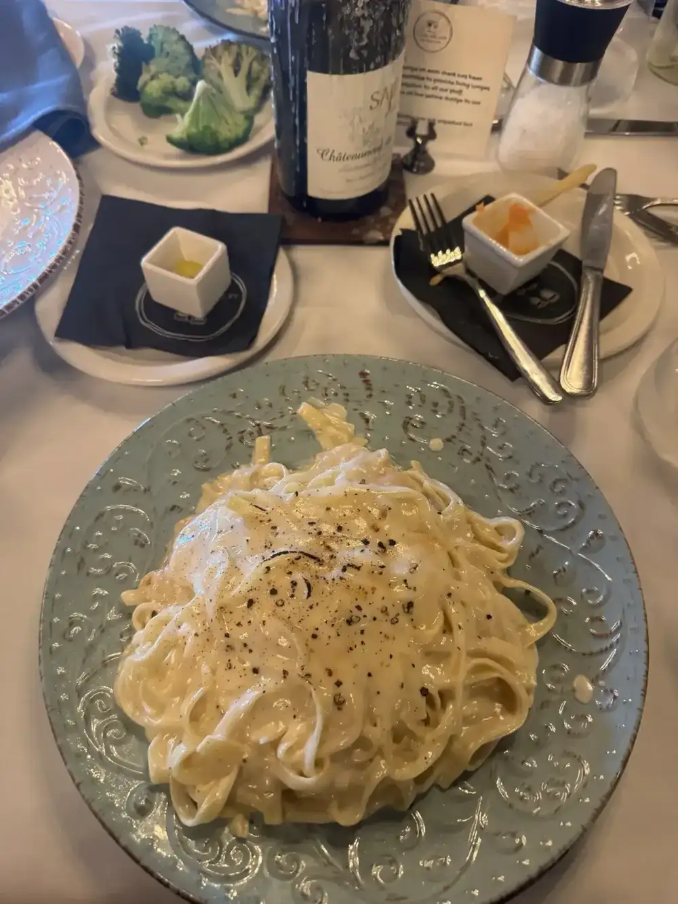
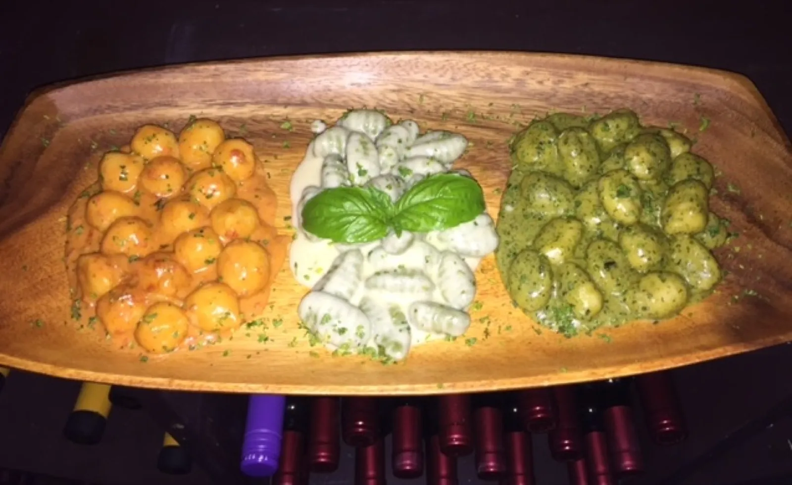
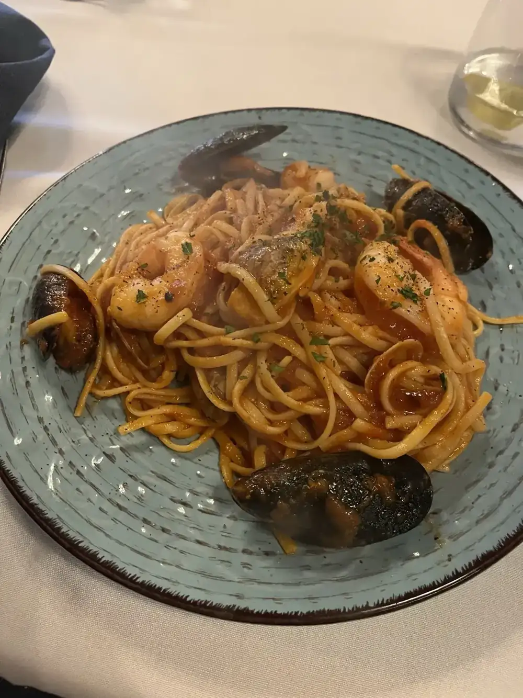
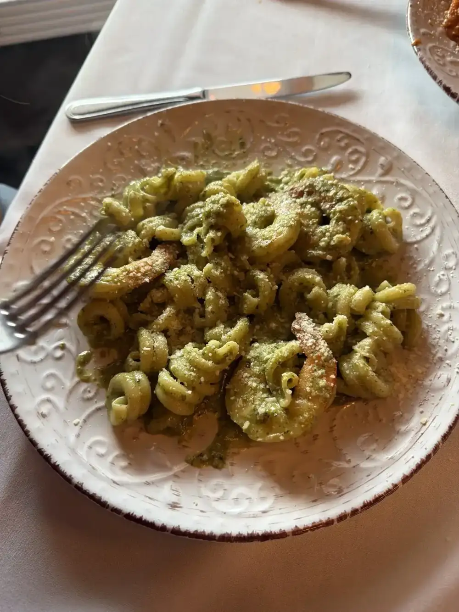

Pasta made in house
Fettuccine in a creamy sauce, and the show guests ask for: pasta prepared inside a Parmesan cheese wheel, made tableside by Franco.
Italian restaurant · Ehrlich Rd, Tampa
Homemade pasta and gnocchi, a pasta tossed tableside in a Parmesan wheel, and owners who stop by your table. Dinner Tuesday through Saturday.

What guests come back for
Plates our guests write home about.

Fettuccine in a creamy sauce, and the show guests ask for: pasta prepared inside a Parmesan cheese wheel, made tableside by Franco.

A guest said the depth of flavors felt like home. Linguine with mussels and a rich red sauce on a blue plate.

Guests say every pasta is homemade in house, gnocchi included. This one comes in a green sauce with shrimp.
4.5 ★ · 750 Google reviews
GUEST CHECK№ 1Delicious!!! Such an amazing and personable experience. We were celebrating a birthday and we were sat at a table that had a happy birthday card already on it! The appetizers were so delicious. We had a brie cheese wrapped in spec, both imported from Italy! Our servers were so friendly, and the owners even came to visit us at the table during our meal.
GUEST CHECK№ 2Such a great family restaurant. As a Sicilian and loving food. La Casa della Pasta is the closest thing to true Italian I’ve had in Tampa. You can tell how much work they put into their dishes.
GUEST CHECK№ 3Phenomenal service. Even better food. I grew up eating Italian and am often disappointed at most restaurants. This is the real deal. The depth of flavors felt like home. Everything was amazing. Espresso was perfect. We live near by and have passed this restaurant a million times. So thankful we finally tried it and can’t wait to go again! Grazie!

Since the first pot of coffee
Mara and Franco bought La Casa della Pasta in 2017 and moved from their home in the Langhe, in Piedmont in northwest Italy, to Tampa. They have spent many years in the restaurant business and love sharing the food and wine they know and love.
Guests notice it. One party celebrating a birthday found a card waiting at their table, and the owners came over during the meal. Franco prepared a guest's pasta in the Parmesan wheel right at the table. Pastas, gnocchi, cannoli and tiramisu are all made in house, guests say.
Slide on in
5273 Ehrlich Rd, Tampa, FL 33624
Reservations are highly suggested and can be made through OpenTable. Takeout is available through UberEats or GrubHub. Closed Sunday and Monday.